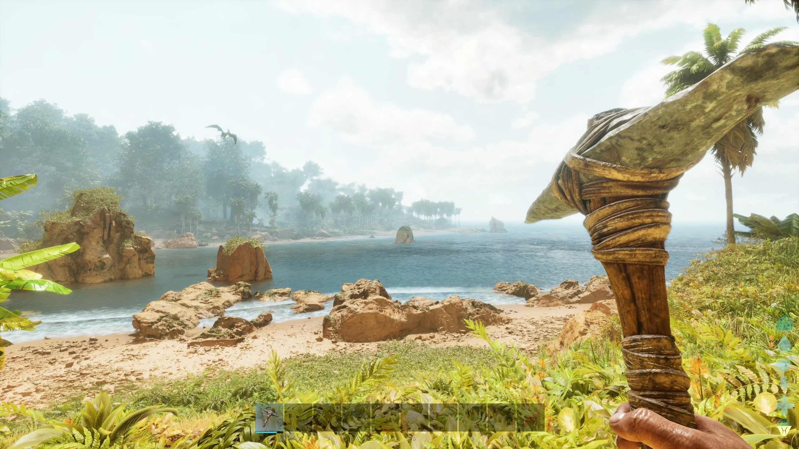

ARK: Survival Ascended（ASA）は、ARK: Survival Evolved（ASE）のリマスター版であり、
最新の技術を用いて再構築されたオープンワールドのサバイバルアクションゲームです。
ASAにおけるテイムとは、生物を仲間にすることを指します。
テイムするためにはトラップやアイテムなど多くの準備を必要としますが、
多くの作業を効率化して行えるため、ASAクリアには欠かせないゲームコンテンツです。
最もオーソドックスなテイム方法は、生物を罠に拘束して昏睡させ、餌を与えてテイムする方法です。
昏睡テイムの次にメジャーなテイム方法は。 昏睡させずに、ゆっくりと近づいて餌を手渡してテイムするです。
ASAでは最初は何も持たずパンツ一丁で始まります。
そこから石や、木を拾い道具をつくり原始的なサバイバル生活が始まります。
初めのころは粗雑な道具や武器でも進めていく内にどんどん近代的になっていき、
最終的には未知の技術にまで到達します。その進化の過程を楽しむのもASAの醍醐味の
ひとつになっています。
